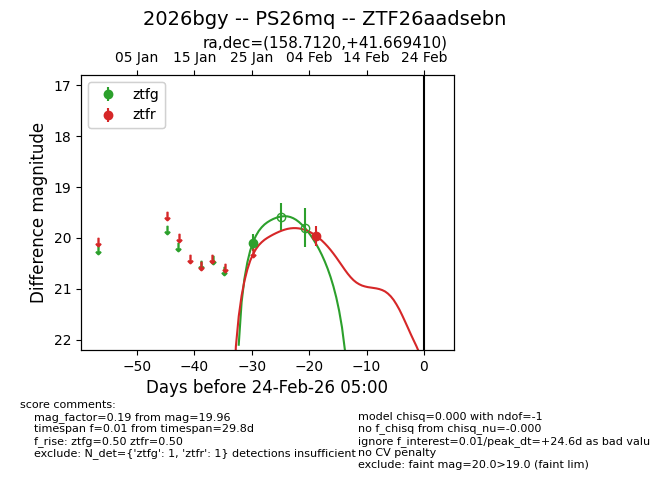
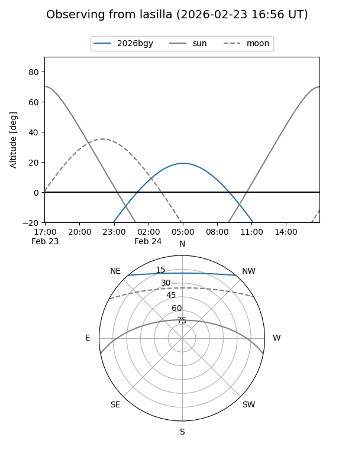
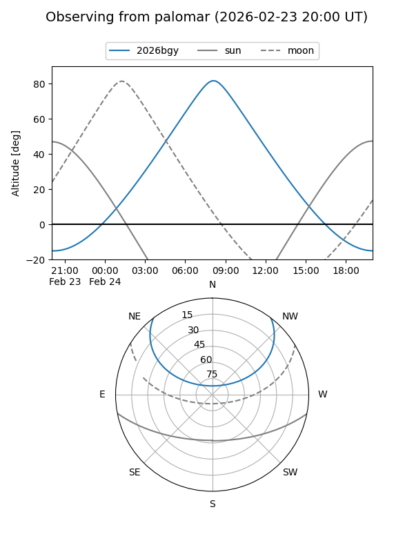

2026bgy
Target 2026bgy at 2026-02-24 09:08
Aliases and brokers:
FINK: link
Lasair: link
ALeRCE: link
TNS: link
YSE: link
alt names
ZTF26aadsebn (ztf,fink_ztf)
2026bgy (tns,yse)
PS26mq (panstarrs)
Coordinates:
equatorial (ra, dec) = 158.7120,+41.66941
equatorial (HMS+DMS) = 10:34:50.87,+41:40:09.88
galactic (l, b) = (176.4735,+58.57794)
Flags:
Photometry:
last ztfg=20.09, ztfr=19.96
1 ztfg, 1 ztfr detections
Lightcurve

Visibility


Additional plots